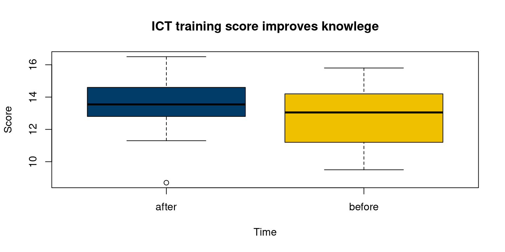
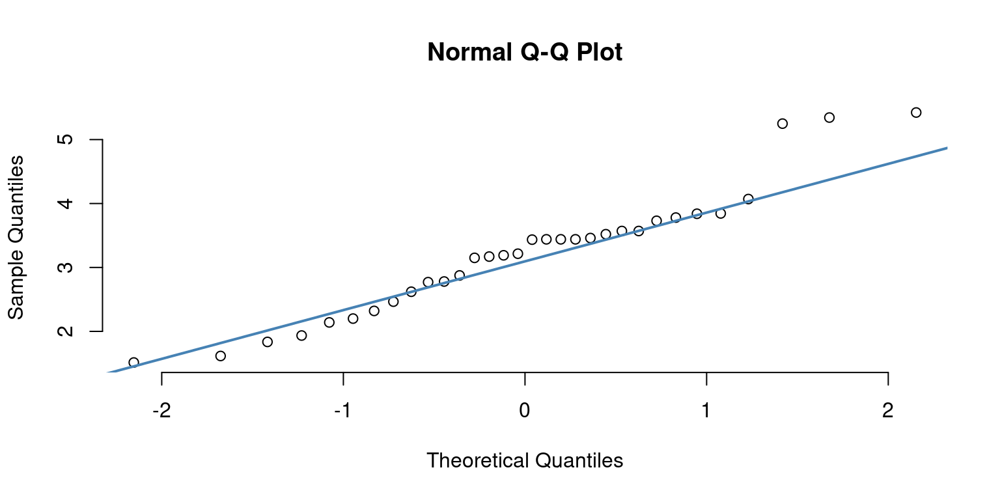

data(mtcars)
attach(mtcars)t-tests
January 21, 2024.
- To evaluate whether there is a significant difference between the means of two groups, a t-test is a statistical test that is employed. T-tests come in a variety of forms, including:
- One-sample t-test
- Independent samples t-test
- Dependent samples t-test (also known as a Paired samples t-test)
One-sample t-test is a statistical test used to determine if a sample mean differs significantly from a hypothesized population mean.
Independent samples t-test is a statistical test used to determine if the means of two independent samples are significantly different.
Dependent samples t-test is a statistical test used to determine if there is a significant difference between two related samples.
One-Sample t-test
Business Applications of One-Sample t-test
Marketing:
A one-sample t-test can be used in various ways to make data-driven decisions. Here are some marketing applications of one-sample t-test:
Testing for ad effectiveness: A one-sample t-test can be performed to ascertain whether a marketing campaign has been successful in raising brand recognition or sales. Customers can be randomly chosen and asked to complete surveys both before and after the promotion. To ascertain whether the campaign was successful, a one-sample t-test can be used to compare the mean survey scores from before and after the campaign.
Price testing: Customers’ acceptance of a product’s price can be assessed using a one-sample t-test. To ascertain a sample of customers’ purchasing intentions, a survey might be conducted. One-sample t-tests can be used to compare the sample mean to the product’s pricing to determine whether it is too high or too cheap.
Product testing: To find out if a product satisfies client expectations, utilise the one-sample t-test. Customers can be asked to complete a survey to review a product on its quality, dependability, and design, among other qualities. To ascertain whether the product matches customer expectations, one-sample t-tests can be used to compare the sample’s mean scores to the hypothesised mean.
Customer satisfaction testing: To find out whether customers are pleased with a product or service, utilise the one-sample t-test. To gauge customer happiness, a sample of customers can complete a survey. A one-sample t-test can be used to compare the sample’s mean score to a hypothesised mean in order to assess whether or not customers are happy.
Market research: One-sample t-tests can be used by businesses to examine survey data and determine whether a sample’s responses significantly deviate from an assumed mean. Understanding consumer preferences and making wise company decisions can both benefit from this.
Finance:
In finance, one-sample t-test can be used in various ways to make data-driven decisions. Here are some finance applications of one-sample t-test:
Stock market analysis: If a stock’s returns are considerably different from a benchmark index or an expected return, one-sample t-test can be employed to detect this. If the stock’s performance differs significantly from expectations, a one-sample t-test can be used to compare a sample of the returns to the expected return.
Credit risk analysis: If a borrower’s credit score differs significantly from the population’s average credit score, one-sample t-test can be employed to ascertain this. One-sample t-test can be used to compare a sample of borrower credit scores to the population’s average credit score to see if there is a significant difference.
Portfolio performance analysis: If a portfolio’s returns differ considerably from a benchmark index or an expected return, one-sample t-test can be employed to assess this. If the portfolio’s performance differs significantly from expectations, a one-sample t-test can be used to compare a sample of the returns to the predicted return.
Hypothesis testing: Financial hypotheses can be tested using the one-sample t-test, including the ones that a variable has a normal distribution and that an asset class’s mean return is zero.
Organizational Behavior:
In organizational behavior, one-sample t-test can be used in various ways to make data-driven decisions. Here are some organizational behavior applications of one-sample t-test:
Employee satisfaction surveys: A one-sample t-test can be used to examine whether the average score in a survey of employees is substantially different from an average score that has been hypothesised. One-sample t-test can be used to compare the survey results to the estimated average score to see if employee satisfaction differs significantly from what was predicted.
Training program evaluations: If the average score of a training programme evaluation differs considerably from a predicted average score, a one-sample t-test can be performed to discover this. The effectiveness of the training programme can be assessed by comparing the evaluation results to the average score that was hypothesised using a one-sample t-test.
Employee performance evaluations: If the average score of an employee performance review differs considerably from a predicted average score, a one-sample t-test can be performed to determine this. One-sample t-tests can be used to compare the evaluation results to the hypothetical average score to see if the employee’s performance differed considerably from what was anticipated.
Organizational culture assessments: If the average score of an organisational culture evaluation differs considerably from a predicted average score, a one-sample t-test can be performed to determine this. One-sample t-test can be used to examine whether the organisational culture is significantly different from what was anticipated by comparing the assessment findings to the average score that was hypothesised.
Concept behind the One-Sample t-test
- The mean of a single sample of observations, commonly referred to as the “hypothesised mean,” is compared to a known value using a one-sample t-test, a statistical test.
- The test can be used to derive conclusions about the population from which the sample was taken and determines whether the sample mean differs significantly from the anticipated mean.
- The t-statistic, which is the difference between the sample mean and the hypothesised mean divided by the standard error of the mean, serves as the foundation for the test.
- The chance of observing the sample mean if the genuine population mean is identical to the hypothesised mean is then calculated by comparing the t-statistic to a t-distribution.
- If this probability is small, it suggests that the sample mean is significantly different from the hypothesized mean, and the null hypothesis (that the sample mean is equal to the hypothesized mean) can be rejected.
Running the One-Sample t-test in R
- Read the data into a dataframe
- Convert the data type of categorical data to factor
mtcars$cyl <- as.factor(mtcars$cyl)
mtcars$am <- as.factor(mtcars$am)
mtcars$gear <- as.factor(mtcars$gear)
mtcars$vs <- as.factor(mtcars$vs)- As an illustration, suppose that our objective is to compare whether the mean weight of the cars is different from 3 (1000 lbs), a value determined in a previous study.
- H0: The mean weight of the cars is not different from 3 (1000 lbs).
- H1: The mean weight of the cars is different from 3 (1000 lbs).
- Code:
# One-sample t-test
res <- t.test(wt, mu = 3)
# Printing the results
res
One Sample t-test
data: wt
t = 1.256, df = 31, p-value = 0.2185
alternative hypothesis: true mean is not equal to 3
95 percent confidence interval:
2.864478 3.570022
sample estimates:
mean of x
3.21725 The p-value of the test is 0.2185, which is greater than the significance level alpha = 0.05.
So we fail to reject the null hypothesis.
We can conclude that the mean weight of the cars is not different from theoretical mean 3 (1000 lbs)
Independent Samples t-test
Business Applications of Independent Samples t-test
Marketing:
A/B testing: The effectiveness of two versions of a website or marketing campaign can be compared using the two-sample t-test to see if there are any significant differences. To establish which version is more successful, a sample of consumers can be randomly assigned to either one, and their replies can then be compared using a two-sample t-test.
Product comparisons: To find out if the means of two different items are substantially different in terms of customer preferences, apply the two-sample t-test. To establish which product is preferred, a sample of consumers can be asked to rate the two goods, and the mean scores can be compared using a two-sample t-test.
Price comparisons: To find out if the means of two alternative prices are significantly different in terms of client preferences, apply the two-sample t-test. To find out which price is more acceptable, a sample of customers can be polled about their willingness to pay for a product at two different prices. The mean scores from the comparison can then be compared using a two-sample t-test.
Demographic comparisons: The two-sample t-test can be used to determine whether the means of two different demographic groups’ purchasing patterns are significantly different from one another. To find out if there are any notable differences in the purchasing habits of a sample of customers from two different demographic groups, the mean scores can be compared using a two-sample t-test.
Finance:
Investment strategy comparisons: To find out if the means of two alternative investing strategies are substantially different in terms of their returns, apply the two-sample t-test. The strategy with a significantly greater return can be determined by comparing a sample of investments in each strategy using a two-sample t-test.
Asset class comparisons: To find out if the means of two separate asset classes have returns that differ considerably, apply the two-sample t-test. The asset class with the considerably greater return can be identified by comparing a sample of investments in each asset class using a two-sample t-test.
Industry comparisons: To find out if the means of two distinct industries have statistically different financial performance, apply the two-sample t-test. The two-sample t-test can be used to compare a sample of businesses from each industry to discover which has significantly better financial performance.
Portfolio performance comparisons: If the means of two separate portfolios differ considerably in terms of returns, the two-sample t-test can be employed to determine this. The portfolio with a significantly better return can be determined by comparing a sample of investments in each portfolio using a two-sample t-test.
Organizational Behavior:
Gender and diversity studies: If there is a statistically significant difference between the means of two different gender or diversity groups with regard to their work attitudes, job satisfaction, or other pertinent factors, the two-sample t-test can be employed to ascertain this. The two-sample t-test can be used to examine a sample of employees from each group to see whether there are any notable differences in their attitudes or job satisfaction.
Leadership studies: To find out if the means of two alternative leadership philosophies are noticeably different in terms of their efficacy, apply the two-sample t-test. To ascertain whether leadership style is more efficient in terms of employee performance, work happiness, or other pertinent characteristics, a sample of employees from each leadership style can be compared using a two-sample t-test.
Organizational change studies: The means of two distinct employee groups can be compared using the two-sample t-test to see if they differ significantly in terms of how they reacted to organisational change. To see if there are any appreciable variations in the employees’ attitudes or levels of job satisfaction, a sample of those who are exposed to the change and those who are not can be compared using a two-sample t-test.
Workload and job demands studies: To find out if the means of two different job roles or teams have significantly different workloads or job demands, apply the two-sample t-test. The two-sample t-test can be used to examine a sample of individuals from each job role or team to see whether there are any notable differences in the workload or job demands.
Concept behind the Two Sample t-test
- Example: Compare whether the mean weight of the cars having am = 0 is significantly different from mean weight of the cars having am = 1.
H0: The mean weight of the cars having am = 0 is not significantly different from mean weight of the cars having am = 1
H1: The mean weight of the cars having am = 0 is significantly different from mean weight of the cars having am = 1
Two Sample t-test
data: wt by am
t = 5.2576, df = 30, p-value = 1.125e-05
alternative hypothesis: true difference in means between group 0 and group 1 is not equal to 0
95 percent confidence interval:
0.8304317 1.8853577
sample estimates:
mean in group 0 mean in group 1
3.768895 2.411000 The p-value of the test is 1.125e-05, which is less than the significance level alpha = 0.05.
We can reject the null hypothesis.
We conclude that mean weight of the cars having am = 0 is significantly different from mean weight of the cars having am = 1
Dependent Samples t-test (a.k.a Paired Samples t-test)
Business Applications of Dependent Sample t-test
Marketing:
Before-and-after studies: If there is a significant difference between the outcomes of a marketing campaign or intervention before and after, the dependent sample t-test can be employed to ascertain this. To determine whether there has been a substantial shift in the customers’ opinions or behaviour, a sample of consumers can be polled before and after the campaign or intervention, and their replies can be compared using a dependent sample t-test.
Loyalty program evaluations: To find out if there is a significant difference in consumer spending or loyalty before and after the launch of a loyalty programme, utilise the dependent sample t-test. To ascertain whether there is a significant difference, a sample of customers can be followed before and after the program’s launch, and their spending or loyalty can be compared using a dependent sample t-test.
Product feature evaluations: If there is a substantial difference in client preferences for a product with or without a certain feature, the dependent sample t-test can be employed to ascertain it. To ascertain whether there is a significant difference, a sample of consumers can be asked to rate the product both with and without the feature, and their replies can be compared using a dependent sample t-test.
Sales promotion evaluations: To find out if there is a significant difference in sales before and after a sales promotion, apply the dependent sample t-test. To find out if there is a substantial difference, sales data can be collected before and after the promotion and compared using dependent sample t-test.
Finance:
Investment performance evaluations: If there is a substantial difference in investment performance between two separate time periods, the dependent sample t-test can be performed to ascertain this. The dependent sample t-test can be used to compare a sample of investments before and after a particular event or time period, like as the introduction of a new policy or a shift in the market, to see if there is a significant difference in performance.
Trading strategy evaluations: To find out if there is a significant difference in the performance of a trading strategy before and after a particular event or time period, utilise the dependent sample t-test. If there is a significant difference in performance between before and after the event or time period, a sample of trading strategies can be compared using a dependent sample t-test to find out.
Risk management evaluations: To find out if there is a significant difference in risk before and after a particular event or time period, apply the dependent sample t-test. To evaluate if there is a significant difference in risk before and after the event or time period, a sample of risk management solutions can be compared using a dependent sample t-test.
Portfolio management evaluations: To find out if there is a significant difference in portfolio performance before and after a particular event or time period, apply the dependent sample t-test. To establish if there is a significant difference in performance before and after the event or time period, a sample of portfolios can be compared using a dependent sample t-test.
Organizational Behavior:
Training evaluations: To find out if there is a significant change in employee performance between before and after a certain training programme, utilise the dependent sample t-test. To determine whether there is a significant difference in the performance of a sample of employees, their performance can be assessed before and after the training programme and compared using a dependent sample t-test.
Employee engagement evaluations: To find out if there is a significant difference in employee engagement between before and after a given intervention or policy change, utilise the dependent sample t-test. The dependent sample t-test can be used to examine the engagement levels of a sample of employees before and after the intervention or policy change and see whether there is a statistically significant difference.
Leadership evaluations: To evaluate whether there is a significant difference in leadership effectiveness between before and after a certain leadership development programme, a dependent sample t-test can be utilised. A dependent sample t-test can be used to assess the perceptions of leadership effectiveness of a sample of employees before and after the programme to see if there is a statistically significant difference.
Organizational change evaluations: To evaluate whether there is a significant difference in employee attitudes before and after a certain organisational change, utilise the dependent sample t-test. To determine whether there is a significant difference, a sample of employees can be assessed before and after the change, and their views of the change can be compared using a dependent sample t-test.
Concept behind the Paired sample t-test
It is a statistical method used to check if the mean difference between two sets of observations is zero is the paired sample t-test, also known as the dependent sample t-test.
Each subject or thing is measured twice in a paired sample t-test, yielding pairs of observations.
Hypothesis for Paired sample t-test
Suppose a training program was conducted to improve the participants’ knowledge of ICT. Data were collected from a selected sample of 10 individuals before and after the ICT training program.
Test the hypothesis that the training is effective to improve the participants’ knowledge of ICT at 95% level of significance.
Hypotheses
H0: there is no difference in participants’ knowledge before and after the ICT training
H1: ICT training affected the participant’s knowledge
ICT training data
- Let’s create this data set. First, create before and after as objects containing the scores of ICT training.
before <- c(12.2, 14.6, 13.4, 11.2, 12.7, 10.4, 15.8, 13.9, 9.5, 14.2)
after <- c(13.5, 15.2, 13.6, 12.8, 13.7, 11.3, 16.5, 13.4, 8.7, 14.6)- Now create a data matrix using data.frame() function.
df <- data.frame(subject = rep(c(1:10), 2),
time = rep(c("before", "after"), each = 10),
score = c(before, after))
print(df) subject time score
1 1 before 12.2
2 2 before 14.6
3 3 before 13.4
4 4 before 11.2
5 5 before 12.7
6 6 before 10.4
7 7 before 15.8
8 8 before 13.9
9 9 before 9.5
10 10 before 14.2
11 1 after 13.5
12 2 after 15.2
13 3 after 13.6
14 4 after 12.8
15 5 after 13.7
16 6 after 11.3
17 7 after 16.5
18 8 after 13.4
19 9 after 8.7
20 10 after 14.6Visualizing samples
boxplot(score ~ time, data = df,
col = c("#003C67FF", "#EFC000FF"),
main = "ICT training score improves knowlege",
xlab = "Time", ylab = "Score")
Running Paired sample t-test in R
t.test(formula = score ~ time, data = df,
alternative = "greater",
mu = 0,
paired = TRUE,
var.equal = TRUE,
conf.level = 0.95)
Paired t-test
data: score by time
t = 2.272, df = 9, p-value = 0.0246
alternative hypothesis: true mean difference is greater than 0
95 percent confidence interval:
0.1043169 Inf
sample estimates:
mean difference
0.54 # mu argument indicate the true value of difference in means for a two sample test.
# TRUE for paired argument as this is paired sample data and each subject is measured twice before and after the ICT training. The results showed that the probability value is lower than 0.05.
Lower the p-value, lower the evidence we have to support the null hypothesis.
Based on this result, we shall reject the null hypothesis of no difference. It means ICT training significantly improved the participants’ knowledge.
t-test Assumptions
Assumptions behind One-Sample t-test
Recall that the one-sample t-test is a statistical test used to determine if the mean of a sample is significantly different from a known or hypothesized population mean. There are several assumptions that must be met before conducting a one-sample t-test:
Random sampling: The sample should be randomly selected from the population of interest. This assumption ensures that the sample is representative of the population.
Normality: The data should follow a normal distribution. This assumption is important because the t-test assumes that the distribution of the means of the sample is normal.
Independence: The observations within the sample should be independent of each other. In other words, the value of one observation should not depend on or influence the value of another observation in the same sample.
Scale of measurement: The data should be measured on an interval or ratio scale. This assumption ensures that the data has equal intervals between values.
If these assumptions are not met, the results of the one-sample t-test may not be valid or reliable. It is important to check these assumptions before conducting a one-sample t-test and to use alternative tests if the assumptions are not met.
Assumptions behind the Independent samples t-test
Remember that the one-sample t-test is a statistical analysis used to assess whether a sample’s mean differs significantly from an actual or predicted population mean. Before doing a one-sample t-test, a number of conditions must be satisfied:
Independence: Each group’s observations must be separate from the others. In other words, the value of one observation in a group shouldn’t be influenced or dependent on the value of another observation.
Normality: Each group’s data should have a normal distribution. This presumption is crucial since the t-test assumes a normal distribution for the distribution of the mean differences between the two groups.
Homogeneity of variance: Each group’s data variance ought to be equal. Because the t-test implies that the variances of the two groups are identical, this presumption is crucial.
Scale of measurement: The data should be measured on an interval or ratio scale. This assumption ensures that the data has equal intervals between values.
The findings of the independent samples t-test might not be valid or accurate if these suppositions are not true. When performing an independent samples t-test, it is crucial to confirm these hypotheses. If necessary, other tests should be used. Non-parametric tests like the Mann-Whitney U test can be utilised if the normality assumption is violated. The standard independent samples t-test can be substituted with a Welch’s t-test if the homogeneity of variance assumption is not met.
Assumptions behind the Dependent samples t-test
Remember that a paired samples t-test, sometimes referred to as a dependent samples t-test, is a statistical test used to compare the means of two related samples. The observations in one sample are paired with the observations in the other sample, so the samples are thought to be connected. The samples could, for instance, be measurements taken on the same group of people before and after a therapy. A dependent samples t-test is conducted with the following presumptions:
Independence: The differences between the pairs of observations should be independent of each other. In other words, the value of one difference should not depend on or influence the value of another difference.
Normality: The differences between the paired observations should follow a normal distribution. This assumption is important because the t-test assumes that the distribution of the mean differences is normal.
Scale of measurement: The differences between the paired observations should be measured on an interval or ratio scale. This assumption ensures that the data has equal intervals between values.
The findings of the dependent samples t-test might not be valid or accurate if these suppositions are not true. When doing a dependent samples t-test, it is crucial to confirm these hypotheses. If necessary, other tests should be used. Non-parametric tests, such as the Wilcoxon signed-rank test, can be utilised if the normality assumption is violated.
Checking t-test Assumptions
Assumption of Normality: We will check whether the dependent variable wt is normally distributed or not.
Q-Q Plot for Normality
qqnorm(mtcars$wt, pch = 1, frame = FALSE)
qqline(mtcars$wt, col = "steelblue", lwd = 2)
We can see that all the data points are not on the 45 degree line, hence we assume that the distribuion of weight is not normal.
Shapiro-Wilk Test for Normality
Here, the sample size must be between 3 and 5000)
H0: mtcars$wt is normally distributed
# run Shapiro-Wilk test
shapiro.test(x = mtcars$wt)
Shapiro-Wilk normality test
data: mtcars$wt
W = 0.94326, p-value = 0.09265Two-sample Kolmogorov-Smirnov test for Normality
H0: mtcars$wt is normally distributed
x <- rnorm(32)
ks.test(x, mtcars$wt)
Exact two-sample Kolmogorov-Smirnov test
data: x and mtcars$wt
D = 0.9375, p-value = 2.2e-15
alternative hypothesis: two-sidedAssumption of Equal Variance
We will check whether the variances across the two groups are same or not.
# comparing variances
# H0: The variances of the two samples wt~am are not different
var.test(wt~am)
F test to compare two variances
data: wt by am
F = 1.5876, num df = 18, denom df = 12, p-value = 0.4177
alternative hypothesis: true ratio of variances is not equal to 1
95 percent confidence interval:
0.5107978 4.3959133
sample estimates:
ratio of variances
1.587613 From the output above we can see that the p-value is not less than the significance level of 0.05. This means that there is no evidence to suggest that the variances are statistically significantly different. Therefore, we can assume the homogeneity of variances in the two groups (am = 1 & am = 0).
If the Assumption of Equal Variance is Violated?
We will use Welch Two Sample t-test. We can use this test by simply writting (var.equal = FALSE) using t.test() in R
# Computing t-test,when assumption of equal variance is violated
tst <- t.test(wt~am, var.equal = FALSE)
tst
Welch Two Sample t-test
data: wt by am
t = 5.4939, df = 29.234, p-value = 6.272e-06
alternative hypothesis: true difference in means between group 0 and group 1 is not equal to 0
95 percent confidence interval:
0.8525632 1.8632262
sample estimates:
mean in group 0 mean in group 1
3.768895 2.411000 Non-parametric alternatives to t-test
One-Sample Wilcoxon Signed Rank Test
The one-sample Wilcoxon signed rank test is a non-parametric statistical test alternative to one-sample t-test, when the data cannot be assumed to be normally distributed.
It is used to determine if the median of a single sample of paired observations is different from a hypothesized value.
The test works by first calculating the differences between each pair of observations and taking the absolute values of these differences.
The ranks of these absolute differences are then calculated, and the sign of each difference is retained.
The sum of the ranks of the positive differences and the sum of the ranks of the negative differences are then calculated, and the smaller of the two sums is used as the test statistic.
Hypothesis Testing
- The null hypothesis of the test is that the median of the paired differences is equal to the hypothesized value.
- The alternative hypothesis is that the median of the paired differences is not equal to the hypothesized value.
- The significance of the test is determined by comparing the calculated value of the test statistic to a critical value from a table or by calculating a p-value using the normal approximation or exact method.
- If the p-value is less than the chosen significance level (usually 0.05), then the null hypothesis is rejected, and it is concluded that the median of the paired differences is different from the hypothesized value.
- If the p-value is greater than the chosen significance level, then there is insufficient evidence to reject the null hypothesis.
- Example: Compare whether the median weight of cars the differ from 3 (1000 lbs), a value determined in a previous study.
H0: The median weight of the cars is not different from theoretical median 3 (1000 lbs).
H1: The median weight of the cars is different from theoretical median 3 (1000 lbs).
# One-sample wilcoxon test
wil <- wilcox.test(wt, mu = 3)
# Printing the results
wil The p-value of the test is 0.3081, which is greater than the significance level alpha = 0.05.
We fail to reject the null hypothesis.
We can conclude that the median weight of the cars is not different from theoretical median 3 (1000 lbs)
Two-Sample Wilcoxon test (a.k.a Mann-Whitney U test)
The two-sample Wilcoxon test, also known as the Wilcoxon rank-sum test or Mann-Whitney U test, is a non-parametric statistical test used to compare the distributions of two independent samples.
It is often used as an alternative to the two-sample t-test when the data does not meet the assumption of normality.
The test works by combining the two samples and ranking all the observations from lowest to highest. The ranks of the observations in each sample are then calculated, and the test statistic U is calculated as the smaller of the two sums of the ranks.
Hypothesis Testing
- The null hypothesis of the test is that the two samples come from the same distribution, while the alternative hypothesis is that they come from different distributions.
- The significance of the test is determined by comparing the calculated value of U to a critical value from a table or by calculating a p-value using the normal approximation or exact method.
If the p-value is less than the chosen significance level (usually 0.05), then the null hypothesis is rejected, and it is concluded that the two samples come from different distributions.
If the p-value is greater than the chosen significance level, then there is insufficient evidence to reject the null hypothesis.
- Example: Compare whether the median weight of the cars having am = 0 is significantly different from median weight of the cars having am = 1.
H0: The median weight of the cars having am = 0 is not significantly different from median weight of the cars having am = 1
H1: The median weight of the cars having am = 0 is significantly different from median weight of the cars having am = 1
# Compute unpaired two-samples Wilcoxon test
twil <- wilcox.test(wt~am)Warning in wilcox.test.default(x = DATA[[1L]], y = DATA[[2L]], ...): cannot
compute exact p-value with tiestwil
Wilcoxon rank sum test with continuity correction
data: wt by am
W = 230.5, p-value = 4.347e-05
alternative hypothesis: true location shift is not equal to 0The p-value of the test is 4.347e-05, which is less than the significance level alpha = 0.05.
We can reject the null hypothesis,and conclude that median weight of the cars having am = 0 is significantly different from median weight of the cars having am = 1